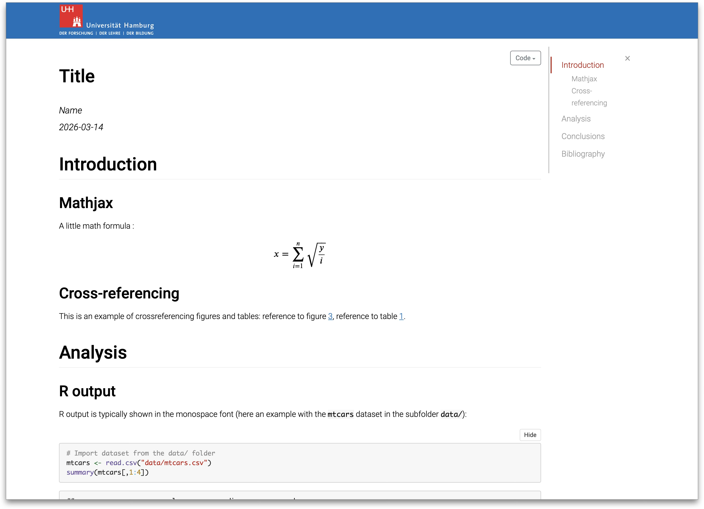
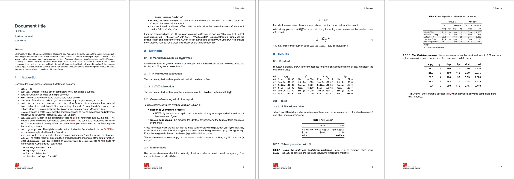
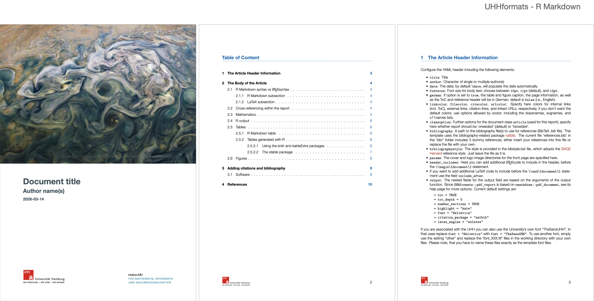
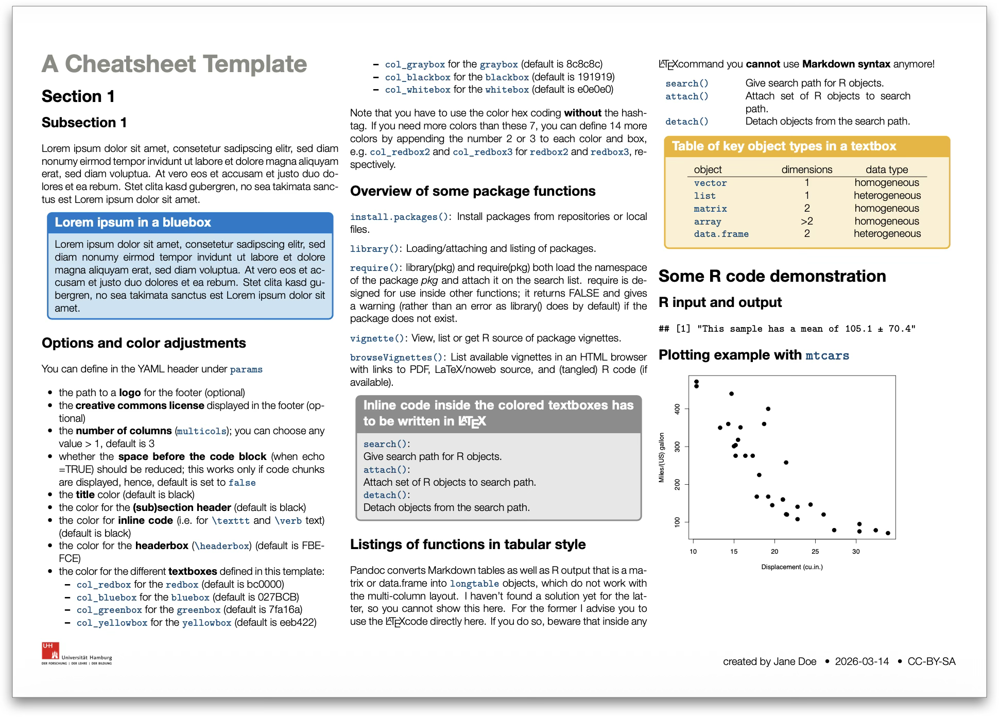
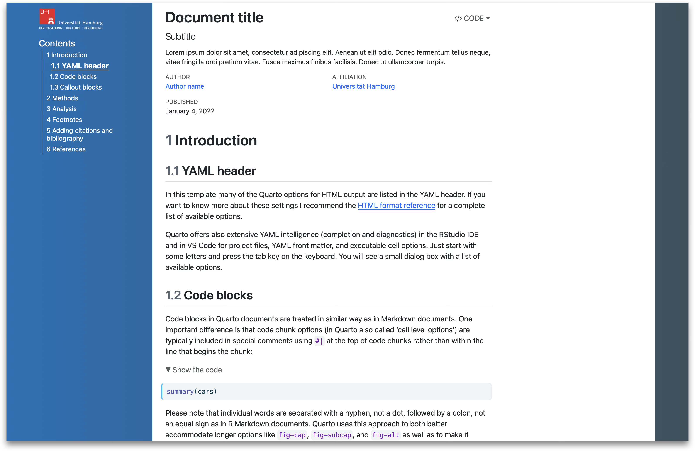
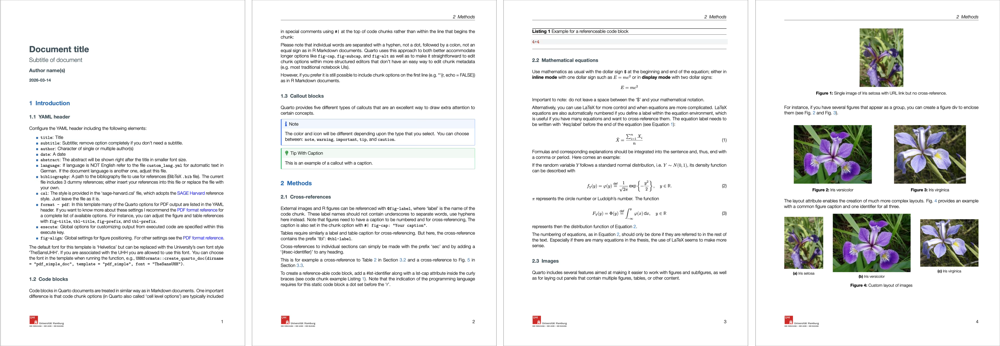
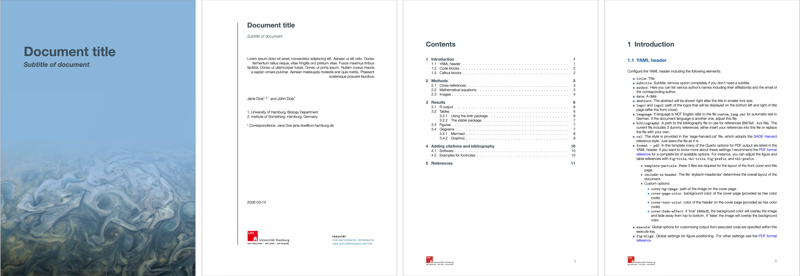
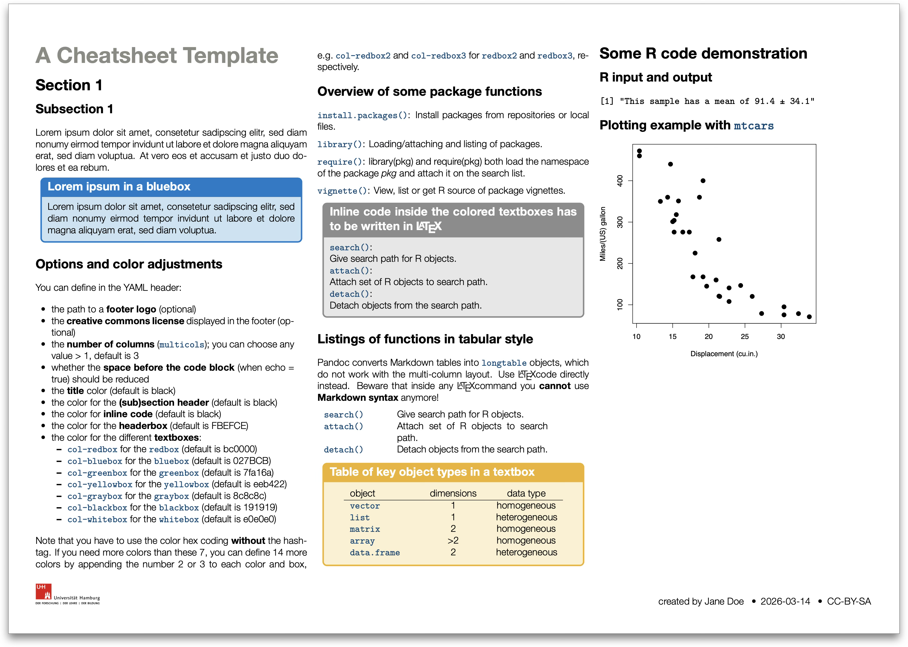

Each template ships with example content covering text formatting, equations, tables, figures with cross-references, and citations. Click Download demo to get a ready-to-open example file.
R Markdown templates
HTML document (html_doc)
A self-contained HTML page with a fixed table of contents, code
folding, and lightbox image display. Uses
bookdown::html_document2 for automatic figure/table
numbering and cross-references.

Simple PDF document (pdf_doc)
A clean PDF article suitable for student assignments. Supports English and German, customisable logos and header/footer.

PDF report (pdf_report)
A report-style PDF with a cover page, header/footer, and table of contents. Suitable for project reports and course work.

PDF cheat sheet (pdf_cheatsheet)
A landscape A4 cheat sheet with configurable columns, coloured text boxes, and adjustable font sizes.

Quarto templates
HTML document (html_doc)
A Quarto HTML page with navigation bar and UHH logo. Supports all standard Quarto HTML features including tabsets, callouts, and interactive widgets.

Simple PDF document (pdf_doc)
A Quarto PDF document in the same style as the R Markdown
pdf_doc template, using the KOMA-Script article class and
XeLaTeX.

PDF report (pdf_report)
A Quarto report-style PDF with a customisable cover page, title page, logos, and table of contents. Cover appearance (image, colours, fade effect) can be controlled via YAML.

PDF cheat sheet (pdf_cheatsheet)
A Quarto-based cheat sheet with configurable columns, coloured text boxes, and adjustable font sizes (see the R Markdown equivalent above for a visual comparison).
